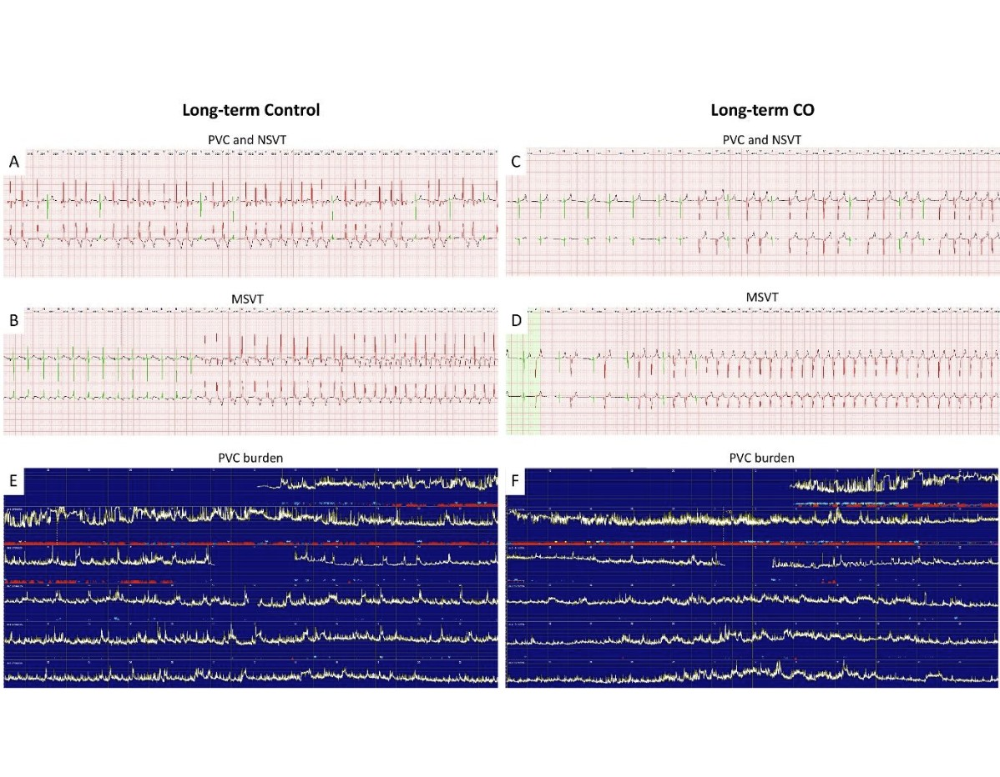

Large-animal Cardiac Organoid validation in an acute myocardial infarction porcine model. Safety was the primary readout — and no arrhythmogenic effects were observed at 30 days post-transplantation.
The lab is not only building cardiac cells, tissue, and organoids — it is validating them in a clinically relevant large-animal system. The translational pipeline is what turns a scalable platform into a credible path toward the clinic cardiac cell therapy.

Thirty days after transplantation, no arrhythmogenic effects were observed. That single sentence is the reason the rest of the programme exists: without a clean safety readout in a large animal, there is no path to the clinic for a cardiac cell therapy.

Scalability, Safety, Translational potential, and Therapeutic relevance. Every cardiac cell, tissue, and cardiac organoid system we develop is measured against these four pillars — a scalable self-organised hiPSC-derived cardiac organoid engrafted inside an acute MI porcine model.
The lab's translational story arrives in three chapters — each one unlocking the next.
Ongoing preclinical studies in a chronic myocardial porcine model are advancing toward human clinical trials. We are open to collaborative partnerships.